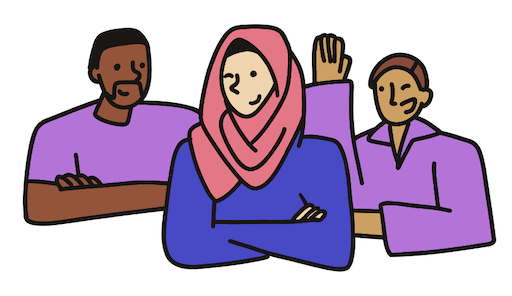

SuperBill
After our first project, Haven, failed to take off, my two friends and I pivoted to another idea: SuperBill.
SuperBill was inspired by the all-too-familiar pain of dealing with insurance companies. We lose crazy amounts of money (or waste crazy amount of time) trying to request reimbursement from insurance companies because they're just so hard to file and fight.
With SuperBill, getting reimbursed for out-of-network services is easy. You give us the bills, and we get you the checks. SuperBill verifies patient benefits, files and tracks claims, and fights on the user's behalf. That's power to the patient!
Visit Superbill
Market Research
Sam and Harrison handled the market research and looked into the viability of an application that would file your medical bills in exchange for a percentage of the reimbursement, or a for a flat fee. We spent months gathering information about patients' frustrations with and workarounds for the complicated insurance system, and providers' willingness to incorporate SuperBill into their processes.
UX Research
I spent time doing both user research to answer "what might the ideal bill filing process look like for patients" (spoiler: the answer is "the fewer steps the better"), and "what tools might a provider need to send bills to insurance companies" (so the reimbursement can go directly to the patient in a streamlined manner).
I also spent time looking at competitor apps and websites in the healthcare industry, and compared their products to what we learned from users. We ended up deciding we wanted our app to accomplish the following things:
1. Predict how much patients can get reimbursed
Users are hesitant to pay money for services that aren't clear on how much value they'll provide. We decided to build out a tool that would take a patient's high-level insurance information and deliver a savings estimate.
2. Don't overcomplicate the app
Simple does it -- everyone is so busy these days and the last thing they need is extra overhead. We want to make the bill-upload experience simple for users (as close to one-click drag & drop as possible, or even a simple email forwarding). We want to simplify the bill tracking lifecycle to be easy to understand (it's either pending, approved, or reimbursed). We want to make a simple portal for providers who partner with SuperBill to upload bills on behalf of their patients (so the patients themselves don't need to do anything, and the providers don't feel like they have to do "extra work").
Mockups
We'll skip to higher-fidelity mockups -- while I started with low-fi mockups, I found that hi-fi mockups naturally came earlier and earlier in the process as we had better clarity on what we needed to accomplish. I'd summarize the UX processes as "pragmatic"
Provider portal ideas
Savings Estimation
Landing Page
Marketing & Illustrations
As part of our sales and marketing efforts, I made a handful of illustrations for use on our platform and social media. Here are a few:

Previous Project
Appian
Next Project
Trailhead 2.0